Vex is a free voice assistant for Windows that runs on your own PC. Talk to it, type to it, let it open apps, set timers and answer questions, and it asks before doing anything risky.
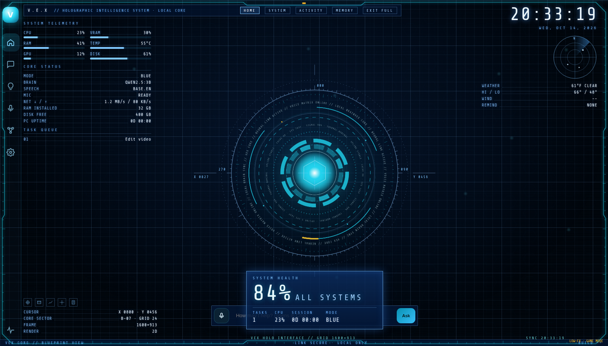
Everything you need from a desktop assistant, with the safety switches where you can see them.
Say “hey Vex” (or any name you give it), hold Ctrl+Alt+V, or just type. Answers are spoken sentence by sentence.
Runs AI on your own PC with Ollama. Setup installs it for you, or plug in your own Groq, Gemini, OpenAI or Claude key.
Opens apps and folders, snaps windows, timers, reminders, media keys, disk clean-up, screenshots and PC stats.
Shutting down, deleting, sending, running programs: it always asks “Shall I proceed?” and waits for your yes.
Dark, clean HUD looks with per-mode colours. Red mode turns effects down while you game.
No account, no tracking, no analytics. Camera off by default. Your voice is never recorded or saved.
About 53 MB. The speech engine (about 240 MB) downloads on first run from official sources, checksum-verified.
Crash reports stay on your PC with your name blanked out. Open or copy them in one click to get help.
The first-run setup walks you through everything in about five minutes. Click any image to see it full size.
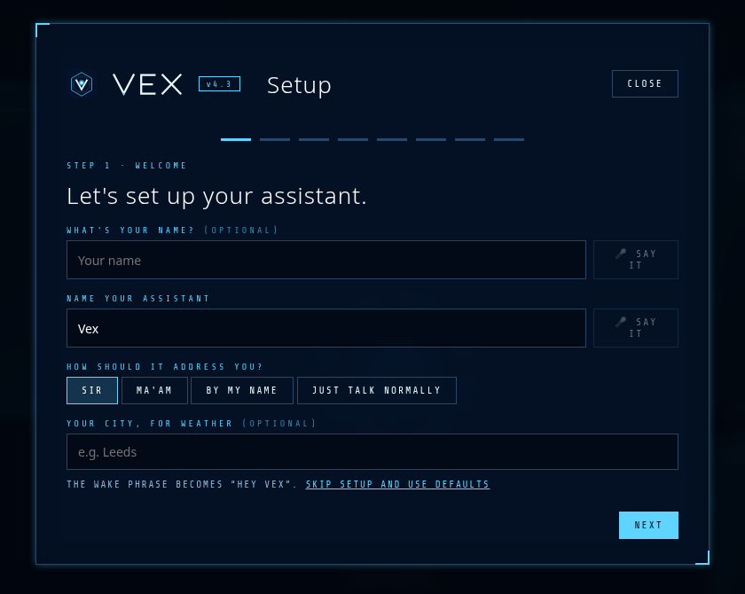
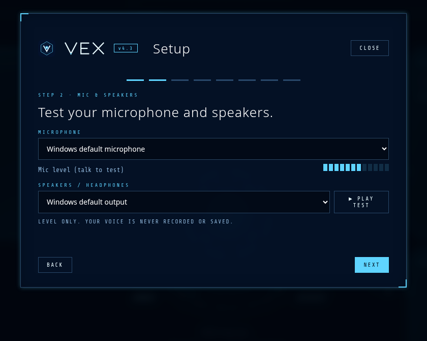
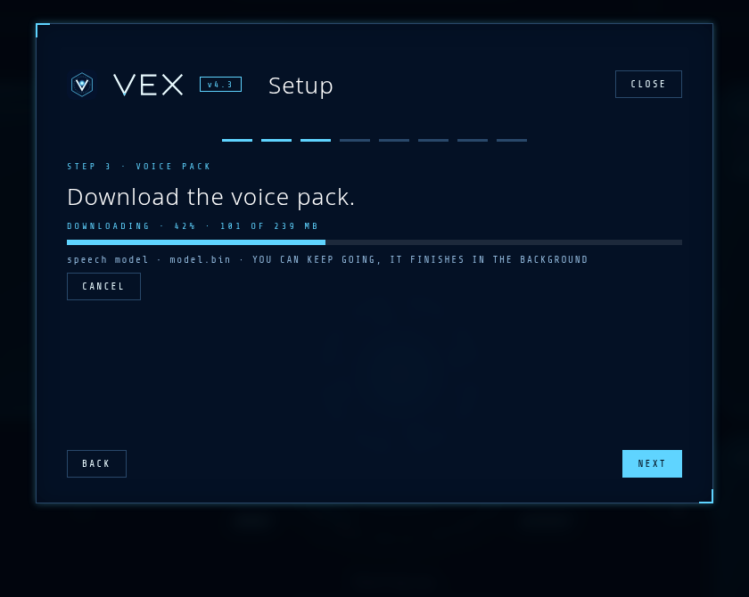
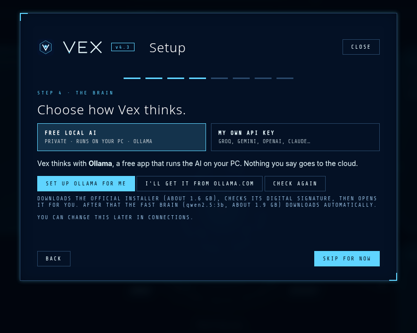
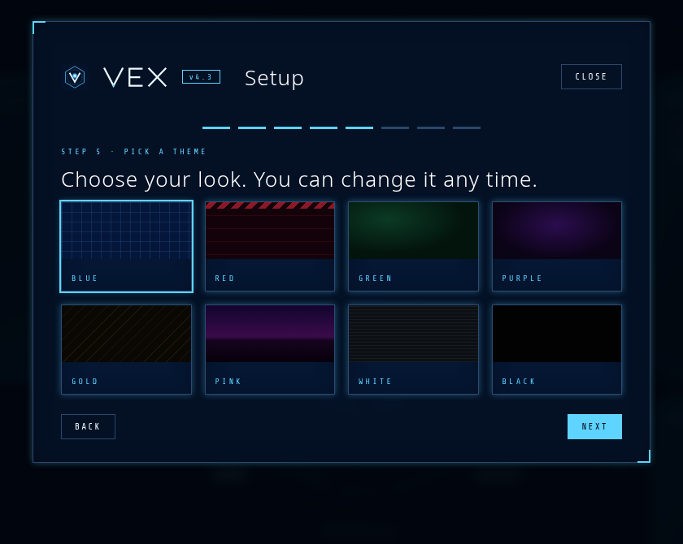
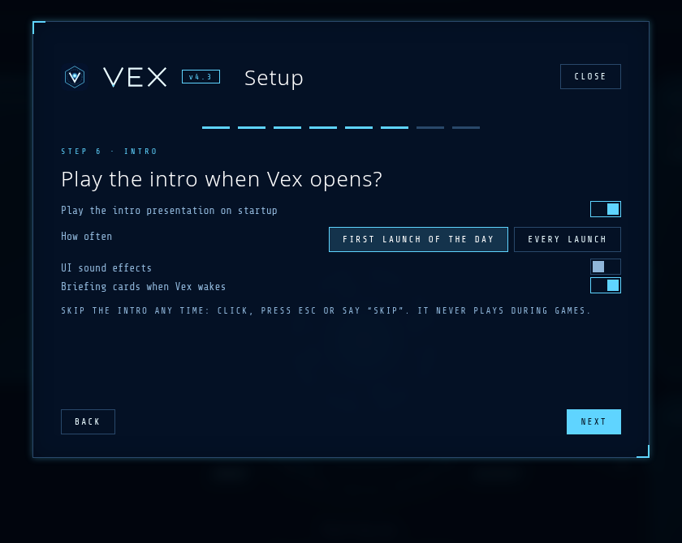
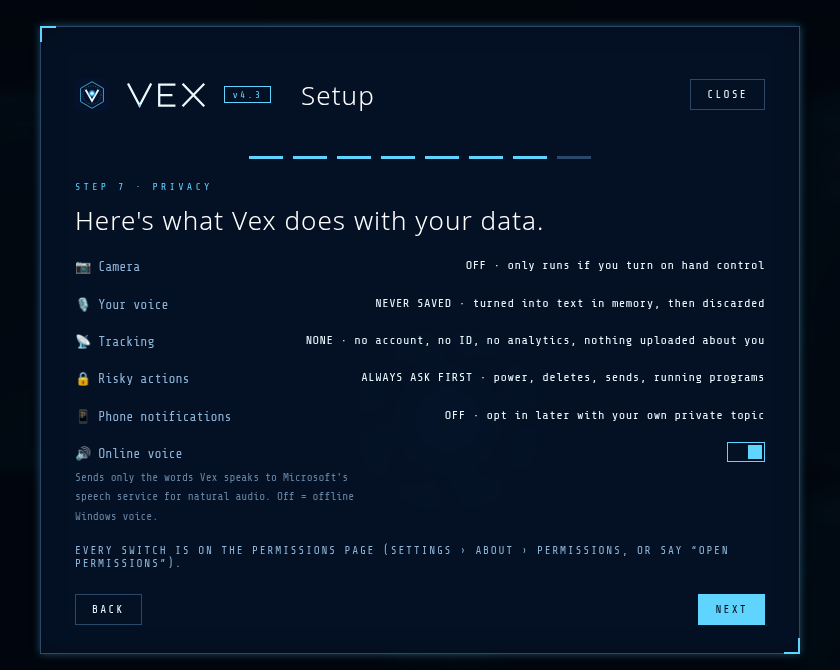
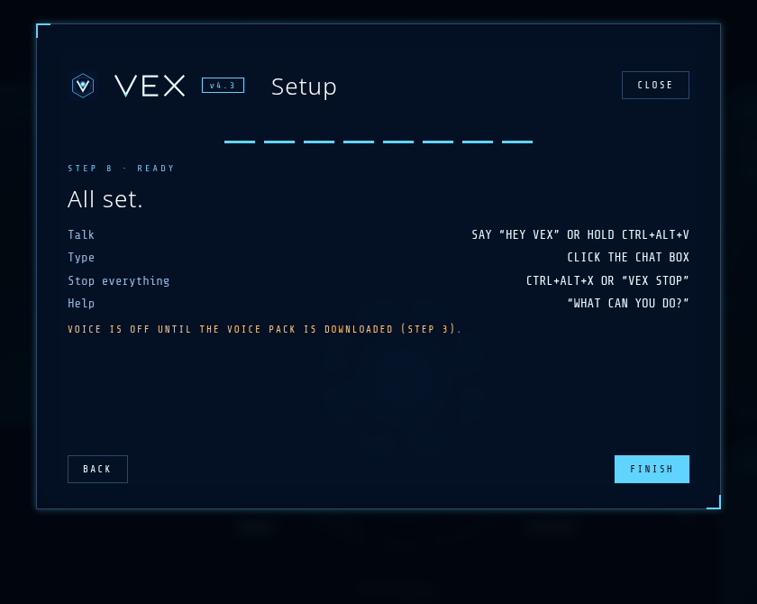
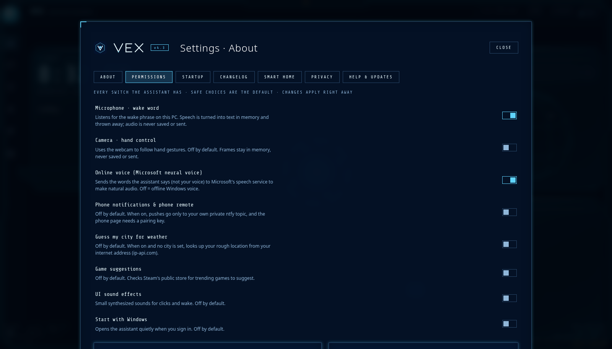
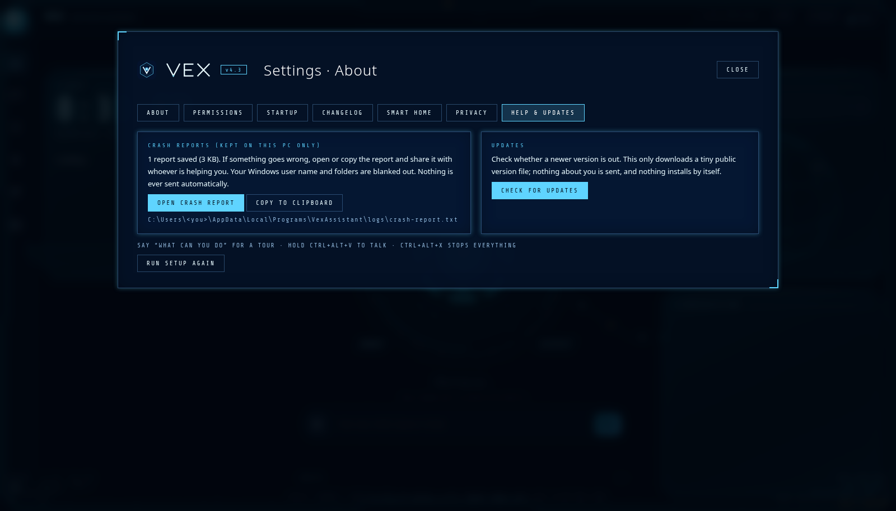
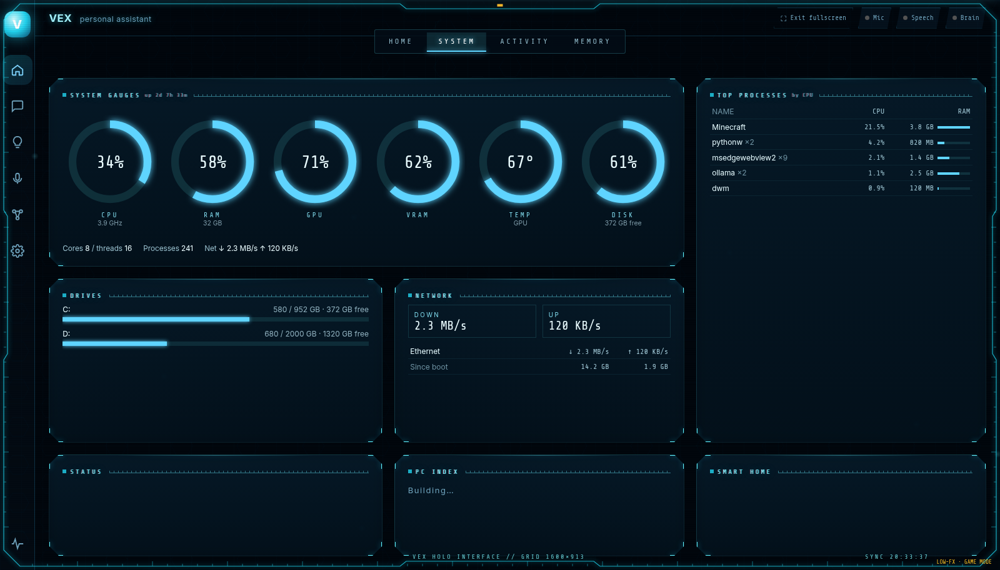
Two minutes to install, about five to set up.
VexAssistant-Setup-4.3.exe and run it. (Or unzip VexAssistant-4.3.zip and double-click Install.cmd.)Get-FileHash .\VexAssistant-Setup-4.3.exe).Most gaming or school PCs from the last few years are fine.
| System | Windows 10 or 11, 64-bit |
| Memory | 8 GB RAM (16 GB or a 6 GB+ GPU for the optional big brain) |
| Disk | About 0.5 GB for the app and voice pack, plus 2–5 GB for an AI model |
| Microphone | Any USB or headset mic |
| Internet | For the first-run downloads. Afterwards it works offline (except web search, weather and the online voice) |
| WebView2 | Built into Windows 11. On older Windows 10, install the free WebView2 Runtime from Microsoft if the window stays blank |
| Optional | Ollama (installed for you by setup) or your own Groq / Gemini / OpenAI / Claude key |
Nothing about you leaves your PC unless you ask for it.
These can't be switched off.
Every switch lives on the Permissions page (Settings › About › Permissions, or say “open permissions”). The uninstaller removes everything Vex added.
Quick answers.
Yes. Vex Assistant is free and open source under the MIT license. The local Ollama brain is free too. If you choose a paid cloud AI key, you pay that service directly. Vex never buys anything.
That's SmartScreen. It appears for new apps that aren't signed with a paid code-signing certificate. Click More info, then Run anyway. You can check the download against the SHA-256 checksums below first.
Only when you click: the voice pack (about 240 MB) from PyPI, Hugging Face and alphacephei.com, and optionally the official Ollama installer from ollama.com (about 1.6 GB) plus an AI model (1.9 GB for the fast brain). Every voice-pack file is checked against a fixed SHA-256, and the Ollama installer's digital signature is checked before it runs.
No. It installs for your Windows user only, into %LOCALAPPDATA%\Programs\VexAssistant. (The Ollama installer may ask for permission on its own.)
After setup, yes: wake word, speech recognition and the local brain all run on your PC. The default voice is an online Microsoft voice; switch to the offline Windows voice in Permissions. Web search and weather need internet.
No. Audio is turned into text in memory and thrown away. There's no voice recording, no captions of what you say, and no mic waveform.
Windows 10 or 11 (64-bit), 8 GB RAM, a microphone. A graphics card with 6 GB or more (or 16 GB RAM) is nice for the optional big brain.
Run setup again from Settings › About › Help & updates (or say “run setup”). The wake phrase follows the name: “hey Nova”.
Settings › About › Help & updates › Copy crash report, then paste it wherever you're asking for help. Nothing is sent automatically.
Settings › Apps › Installed apps › Vex Assistant › Uninstall. It removes everything it added. Ollama is a separate app; remove it the same way if you want.
Vex Assistant's code and original art are released under the MIT License. Bundled and downloaded components keep their own licenses, listed in THIRD_PARTY_LICENSES.txt. All art (icon, wordmark, themes, HUD) is original. Not affiliated with any film, comic or game studio.
What's new: see the changelog. Plain-text guide: README.txt.
Checksums for each release asset are listed on the Releases page and in SHA256SUMS.txt attached to the release.
VexAssistant-Setup-4.3.exe
836b02eef4de4bac909dcf1a1c07110fadd79c24f40676be1afd5854f6d47d31
VexAssistant-4.3.zip
1313b25e53674dfde35343f3be1492364b70729163c81cc82c29b7af05b5b489